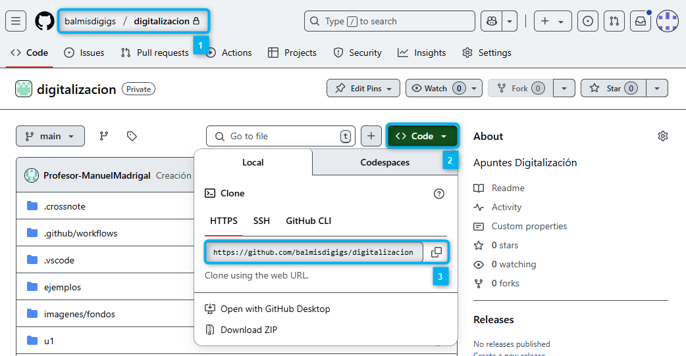
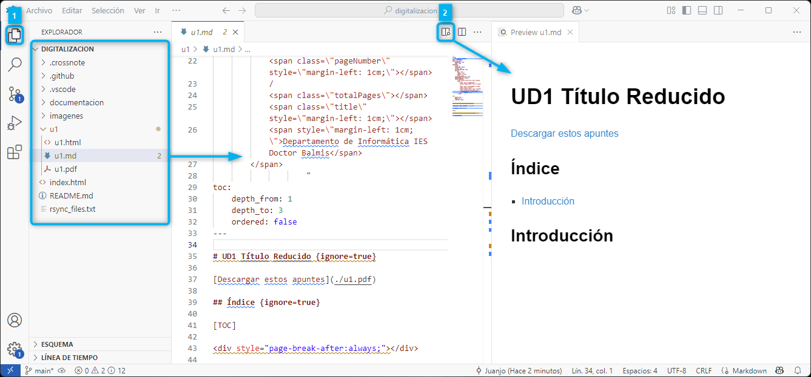
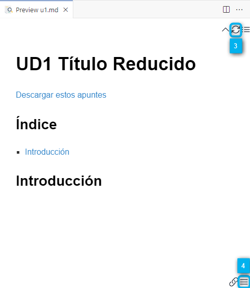
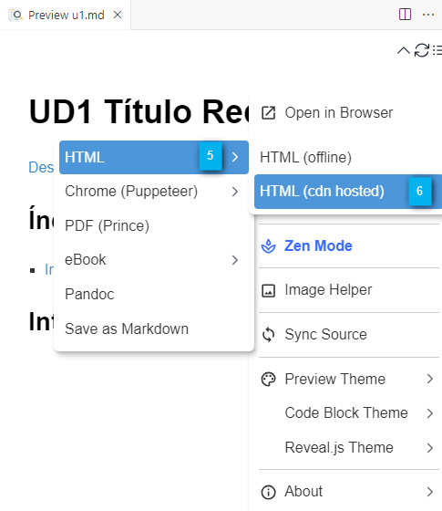
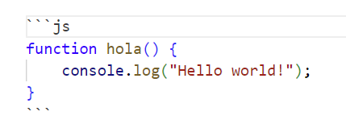
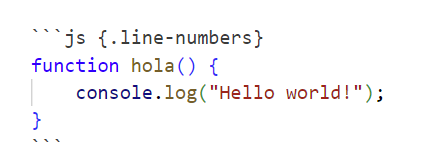
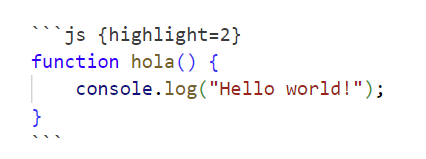
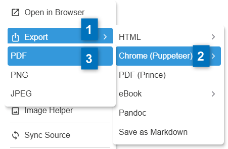

Tener una cuenta de GitHub.
Tener instalado Google Chrome en el equipo.
Tener instalado Git en local. Si es la primera vez que trabajas con git, deberás configurar tu nombre y correo electrónico. Para ello, puedes usar el siguiente comando en la terminal de Windows o Git Bash:
C:\materiales> git config --global user.name "Nombre Apellido"
C:\materiales> git config --global user.email "cuenta@iesdoctorbalmis.com"
Tener el Java Runtime instalado mínimo la versión 17.
Tener instalado Visual Studio Code- Puedes descargar la versión portable ya preparada de GDrive en la carpeta del Departamento.
Si ya lo tienes instalado puedes crearte un perfil personalizado de "Apuntes con Markdown" con las siguientes extensiones:
En la capeta [data] está la configuración local del usuario de VSCode, en la carpeta [extensions] están las extensiones instaladas y en la carpeta descritas en el punto anterior y en la carpeta [user-data] está la configuración global del usuario de VSCode como pueden ser los snippets, temas, configuraciones de usuario, etc.
En la carpeta [jar] está el ejecutable de PlantUML que markdown-preview-enhanced utiliza para renderizar los diagramas, ya está preconfigurado en la instalación portable, pero para funcionar necesitarás tener el JRE de Java instalado como se comentaba anteriormente.
Este manual esta pensado para trabajar con las herramientas anteriores y con un workspace de trabajo ya creado. Si lo que deseas es crear un nuevo workspace, puedes hacerlo seguir los pasos de la siguiente la guía manual_crear_repositorio.pdf que se encuentra junto a este manual.
Supongamos que estamos en una organización de GitHub y tenemos un espacio de trabajo ya creado en una organización siguiendo los pasos de la guía anterior. Veamos un ejemplo de cómo clonarla en local con el siguiente supuesto...

Como se muestra en la imagen, nos encontramos en el repositorio privado de materiales en nuestra organización 1️⃣. Pulsaremos el botón Code 2️⃣ y copiaremos la URL del repositorio 3️⃣. Por último, abriremos la terminal de Windows y ejecutaremos el siguiente comando para clonar el repositorio en local:
C:\materiales> git clone https://github.com/balmisdigigs/digitalizacion.git
C:\materiales> cd digitalizacion
C:\materiales\digitalizacion> code .
No es la idea de este manual profundizar en el uso de VSCode, pero sí trabajar las opciones principales que nos ofrece para trabajar con Markdown.
Al cargar nuestro workspace de digitalización y abrir un fichero .md (markdown) nos encontraremos con la siguiente pantalla:

En ella, para ver el árbol de carpetas y archivos, pulsaremos el icono de la parte superior izquierda Explorador 1️⃣. Si tenemos la extensión Markdown Preview Enhanced, en la parte superior derecha, tendremos el icono de Vista previa (Markdown Preview Enhanced: Open Preview to the Side, Ctrl + K, V) 2️⃣.
En el vista de previa, nos renderizará a HTML todo el código que vayamos escribiendo y al situarnos sobre la misma, nos aparecerán nuevos iconos con opciones sobre el mismo. A destacar, el icono arriba a la derecha para refrescar el contenido del preview 3️⃣ y el icono para de menú 4️⃣ con diferentes opciones. En la imagen de ejemplo hemos seleccionado Export HTML -> HTML (cdn hosted) 5️⃣ & 6️⃣.


Dispones de la siguiente página con la documentación del Plugin en la página de Markdown Preview Enhanced
Dispones de una guía básica de Markdown Básico en la misma página.
Nota
La extensión markdownlint te ayuda ha escribir markdown normalizado, pero como estamos usando una extensión, no es es muy importante salvo respetar los saltos de línea.
En la carpeta .vscode/ se han pre-definido varios code snippets (fragmentos de código) para el workspace situados en en fichero FragmentosPernosalizados.code-snippets dentro de la carpera ..vscode/. Estos fragmentos de código son plantillas que se insertan en el editor. Para usarlas, una vez abierto un fichero con extensión markdown escribiremos mde_ seguido de Ctrl + Space que es el (trigger suggestions) en mi KeyMap.
# Título 1
## Título 2
### Título 3
...
Estándar en Markdown, solo hay que dejar una línea en blanco entre párrafos.
Párrafo con una palabra en **negrita**
Párrafo con una palabra en *cursiva*
Párrafo con una palabra en ***negrita y cursiva***
Párrafo con una palabra en ~~tachado~~
Párrafo con una palabra en `código`
Párrafo con una palabra en **`código en negrita`**
Párrafo con una palabra en *`código en cursiva`*
Párrafo con una palabra en ***`código en negrita y cursiva`***
Los metacaracteres de Markdown son: `*`, `_`, `~`, `\` y `#` y
deberás escaparlos con `\` si quieres que aparezcan en el texto.
Nota
Al tener el plugin "Markdown All in One" instalado, si selecciones una palabra y escribes un * o ` se le añade el formato correspondiente a ambos lados de la selección y no sustituye el texto seleccionado.
En el estándar de Markdown, cada párrafo precedido del caracter > formará parte de la cita.
> Un país, una civilización se puede juzgar
> por la forma en que trata a sus animales.
> — Mahatma Gandhi
Un país, una civilización se puede juzgar
por la forma en que trata a sus animales.
— Mahatma Gandhi
También podremos definir una cita con las admonitions de Mkdocs. Las tienes definidas como fragmentos de código con la raíz mde_cuadro_ por tanto si pulsas mde_cuadro_ seguido de Ctrl + Space te ofrecerá mde_cuadro_cita que te insertará el fragmento para citas.
!!! Quote Cita
Un país, una civilización se puede juzgar
por la forma en que trata a sus animales.
— Mahatma Gandhi
Cita
Un país, una civilización se puede juzgar
por la forma en que trata a sus animales.
— Mahatma Gandhi
Un poco más vistosas, las tienes definidas como fragmentos de código con mde_cita_HTML que generará lo siguiente:
<div class="contenedor">
<div class="fondo">
<div class="abre_comilla">"</div>
<div class="cierra_comilla">"</div>
<div class="cita">Un país, una civilización se puede
juzgar por la forma en que trata a sus animales.</div>
<div class="autor">- Mahatma Gandhi</div>
</div>
</div>
* Elemento 1
* Elemento 2
* Elemento 2.1 (alineado primera letra item padre)
* Elemento 2.1.1
* Elemento 3
1. Elemento 1
2. Elemento 2
1. Elemento 2.1 (alineado primera letra item padre)
1. Elemento 2.1.1antes)
3. Elemento 3
Respetar los espacios es muy importante para que cierto contenido pertenezca o no a un elemento de la lista.
* Elemento 1
Este párrafo pertenece al elemento 1
* Conviene separar las listas indentadas
Este párrafo pertenece al elemento 1.1
Este párrafo pertenece al elemento 1.1
Separa con un **salto de línea** para cotinuar
en el nivel anterior
* Elemento 2
Este párrafo pertenece al elemento 2
Este párrafo pertenece al elemento 2
Este párrafo ya está fuera de la lista
Elemento 1
Este párrafo pertenece al elemento 1
Separa con un salto de línea para cotinuar
en el nivel anterior
Elemento 2
Este párrafo pertenece al elemento 2
Este párrafo pertenece al elemento 2
Este párrafo ya está fuera de la lista
| Columna 1 | Columna 2 | Columna 3 |
| ---------- | ---------- | ---------- |
| Elemento 1 | Elemento 2 | Elemento 3 |
| Elemento 4 | Elemento 5 | Elemento 6 |
| Columna 1 | Columna 2 | Columna 3 |
|---|---|---|
| Elemento 1 | Elemento 2 | Elemento 3 |
| Elemento 4 | Elemento 5 | Elemento 6 |
💡 Tip: Con
Ctrl + K + Dpuedes hacer que la tabla se alienee correctamente.
Enlace normal por ejemplo a Goole:
[Goole](http://www.google.com)
Enlace negrita por ejemplo a Goole:
**[Goole](http://www.google.com)**
Referencia directa http://www.google.com
<http://www.google.com>
Tip
Si usas VSCode y arrastras el archivo de imagen a la ventana del editor y justo antes de soltarla (drop) pulsas la tecla Shift te insertará la imagen en el formato correcto para Markdown.


{ width=200 }
{ height=100 }
Por ejemplo:
{ width=300}
Un poco más vistosas, las tienes definidas como fragmentos de código con mde_imagenCentrada que generará lo siguiente, donde controlamos el tamaño de la imagen y al tener el margen automático, se centra la imagen en la página.
{ style="display:block; margin:0 auto; width:75%;max-width:300px;" }
Fuera del estándar de Markdown, para escribir expresiones matemáticas, Markdown Preview Enhanced utiliza KaTeX que representa las expresiones como si fuera Latex, en este enlace tienes una chuleta de uso.
Añadiendo un solo símbolo del dolar antes y después del código Latex $f(x) = x^2+3$ que generaría como está función con display en línea.
Añadiendo dos símbolos del dólar antes y después del código Latex $$f(x) = x^2+3$$ la misma función con display block, esto és en un párrafo a parte y centrada.
Ejemplo en línea:
The homomorphism $f$ is injective if and only if its kernel is only the singleton set $e_G$,
because otherwise $\exists a,b\in G$ with $a\neq b$ such that $f(a)=f(b)$.
The homomorphism is injective if and only if its kernel is only the singleton set ,
because otherwise with such that .
Ejemplo en bloque:
$$
\cos x=
\sum_{k=0}^{\infty}
\frac{(-1)^k}{(2k)!}x^{2k}
$$
Otros ejemplos:
$$
\lim_{x\to\infty} \frac{1}{x} = 0
$$
$$
x = \begin{cases}
a &\text{if } b \\
c &\text{if } d
\end{cases}
$$
$$
\begin{pmatrix}
a & b \\
c & d
\end{pmatrix}
\begin{bmatrix}
a & b \\
c & d
\end{bmatrix}
$$
$$
\begin{pmatrix}
1 & 2 \\
3 & 4
\end{pmatrix}
\quad \text{es distinto a} \quad
\begin{pmatrix}
5 & 6 \\
7 & 8
\end{pmatrix}
$$
$$
\alpha, \beta, \gamma, \Delta
$$
$$
\int_{a}^{b} f(x) \, dx
$$
Además de la ` para escribir código en línea, podemos usar ``` para escribir bloques de código. En el caso de que queramos resaltar el lenguaje a usar, lo indicaremos justo después de la primera línea de apertura del bloque de código. Markdown Preview Enhanced usa la librería Prism.js para resaltar el código. Puedes ver la lista de lenguajes soportados en la página de Prism.js.
📌 Nota: Puedes usar el code snippet
mde_bloque_C#para recordar como añadir líneas y resaltarlas.

function hola() {
console.log("Hello world!");
}

function hola() {
console.log("Hello world!");
}

function hola() { console.log("Hello world!"); }
En ocasiones nos puede interesar simular la salida por consola con un tema negro de fondo. Como no podemos aplicar un tema especifico a un bloque de código se ha creado una clase que se aplicará a una etiqueta <pre class="salida_consola> dispones de code snippet mde_salida_consola para insertarla.
<pre class="salida_consola">
C:> dir *.*
</pre> <!-- fin salida consola -->
C:> dir *.*
Enalaces
Deberemos usar !!! <tipo> <título> y posteriormente el código englobado en el cuadro en una línea inferior indentado/tabulado a la derecha.
!!! note Nota
Este es un bloque de nota.
Con dos líneas de texto.
Dispondremos de varios tipos que puedes visualizar en la siguiente tabla:
note
info
abstract
example
quote
tip
success
question
warning
failure o error
danger
bug
Con el plugin de Markdown Preview Enhanced podemos usar los emojis de GitHub. Para ello, simplemente escribiremos el nombre del emoji entre dos puntos :. Por ejemplo: :smile: representará 😄
Ejemplos de iconos que pueden ser útiles:
| Números | Señales | Objetos | Otros |
|---|---|---|---|
1️⃣ :one: |
✔️ :heavy_check_mark: |
💻 :computer: |
🔥 :fire: |
2️⃣ :two: |
➕ :heavy_plus_sign: |
📖 :book: |
⭐ :star: |
3️⃣ :three: |
⚠️ :warning: |
✏️ :pencil2: |
👍 :+1: |
4️⃣ :four: |
❌ :x: |
💡 :bulb: |
👎 :-1: |
5️⃣ :five: |
🚧 :construction: |
🔍 :mag: |
✋ :hand: |
6️⃣ :six: |
✅ :white_check_mark: |
📌 :pushpin: |
📣 :mega: |
7️⃣ :seven: |
➡️ :arrow_right: |
📦 :package: |
🔗 :link: |
8️⃣ :eight: |
▶️ :arrow_forward: |
💻 :computer: |
🚀 :rocket: |
9️⃣ :nine: |
ℹ️ :information_source: |
📋 :clipboard: |
💊 :pill: |
🔟 :keycap_ten: |
💀 :skull: |
🔑 :key: |
🎓 :mortar_board: |
📌 Nota: Puedes ver la lista completa de emojis en la GitHub Emoji Cheat Sheet.
Markdown Preview Enhanced soporta varios tipos de diagramas, entre ellos: PlantUML, Mermaid, Graphviz etc. Vamos a ver algunos de los más comunes.
La sintaxis es similar a la de los bloques de código, pero en vez de usar el nombre del lenguaje, usaremos el nombre del tipo de diagrama. Por ejemplo vemos un diagrama de tipo dot de Graphviz:
El tamaño ("ancho,alto") lo establecemos en pulgadas con la propiedad size Por defecto el diagrama quedará alineado a la derecha dentro de su contenedor.
No especificamos tamaño al interprete de Graphviz y lo hacemos al parser de Markdown Preview Enhanced. Donde le decimos que esté cxentrado y le aplicamos un zoom del 0.7 (70%) con la propiedad style.
👎 Aplicar zoom a traves del estilo no es buena práctica.
👍 Es la mejor opción, ya que establecemos un viewport en píxeles y el zoom de 0.7 (70%) para que el diagrama quepa en el viewport. Además, de forma opcional le podemos indicar que centre el viewport en el nodo B.
Ejemplo diagrama graphviz representando JRE:
Markdown Preview Enhanced soporta además renderizado a través de servidor de Kroki, que es un servicio de diagramas online. Para ello, deberás configurar el servidor https://kroki.io/ en la extensión de Markdown Preview Enhanced (ya está configurado por defecto). Puesto que es un servicio online, no es necesario instalar nada en local. Pero solo funcionará si tienes acceso a Internet y el servidor está activo o admite el tipo de diagrama que deseas generar. Para renderizar con Kroki, simplemente debes escribir el nombre del diagrama seguido de {kroki=true}.
Por ejemplo: ```dot {kroki=true}
La sintaxis para incluir un fichero externo es @import "<fichero>"{<modificadores_opciona>}
Realmente pudes importar muchos tipos de ficheros..
Un uso común es importar diagramas. Por ejemplo, el diagrama dot del ejemplo anterior lo tenemos guardado en un fichero JRE.dot. Para importarlo, simplemente escribimos:
@import "assets/imagenes/generar_contenido/JRE.dot" {align="center"}
y el plugin se encargará de renderizarlo en local y si ponemos {align="center", kroki=true} a través del servidor de Kroki.
Enalaces
En ella puedes todos los tipos de diagramas que se pueden generar y suelen estar soportados por Markdown Preview Enhanced y otros parsers de markdown. Si renderizamos en local, deberemos tener el JRE instalado y el parser plantuml.jar referenciado en la configuración de la extensión (si estás utilizando nuestro entrono esto ya está hecho), en caso contrario, podemos usar Kroki.
Se han añadido algunos fragmentos de código para facilitar la creación de diagramas.
Es un diagrama de tipo wireframe que representa un espacio de trabajo con carpetas y archivos.
Usaremos el fragmento mde_puml + Ctrl + Space y seleccionaremos mde_puml_folder_tree + Tab insertándonos el siguiente código. Fíjate que el tamaño, lo hemos controlado con la propiedad Scale y si queremos que el color de fondo sea transparente, lo indicamos con skinparam backgroundColor Transparent.
El modelo C4 es un estándar para la representación de arquitecturas de software. La idea es representar la arquitectura de un sistema en diferentes niveles de detalle (hasta 4).
Para usarlo con PlantUML usaremos la librería C4-PlantUML que es un conjunto de plantillas para representar el modelo C4. Para obtener los iconos de los diferentes tipos de sistemas, puedes usar la librería devicons2 que ya los define el formato que entiende PlantUML. En este caso, usaremos el icono de android para la aplicación, tomcat para el servidor y mysql para la base de datos.
Usaremos el fragmento mde_puml + Ctrl + Space y seleccionaremos mde_puml_c4 + Tab insertándonos el siguiente código.
En este ejemplo vamos a incluir un mapa mental. Además, hemos definido un estilo personalizado por niveles de profundidad. Para así ver como añadir estilos a Los diagramas para que todos queden homogéneos.
Usaremos el fragmento mde_puml + Ctrl + Space y seleccionaremos mde_puml_mindmap + Tab insertándonos el siguiente código.
Puesto que el código es un poco largo, lo hemos sacado a un fichero externo mindmap.puml y lo importamos con @import. Puedes ver el código completo en el fichero mindmap.puml que está en la carpeta assets/imagenes/generar_contenido/.
@import "assets/imagenes/generar_contenido/mindmap.puml" {align="center"}
Enalaces
No necesitas ningún tipo de instalación extra, ya que Markdown Preview Enhanced ya lo incluye. Puedes ver la lista de diagramas soportados en la página de Mermaid.
⚠️ Aviso: Este tipo de diagramas están más pensado para rederizar diagramas con frameworks de generación de documentación basados en JavaScript. Como por ejemplo: Docusaurus, VuePress o Astro Starlight, etc.
Para este tipo de diagramas, usaremos el fragmento mde_mermaid + Ctrl + Space y seleccionaremos mde_mermaid_architecture + Tab insertándonos el siguiente código.
En el marco de trabajo se ha incluido un enlace a Bootstrap 5 para poder usar su sistema de maquetación y sus componentes. El enlace se ha incluido en el fichero .crossnote/style.less. Esto nos va a permitir maquetar de forma responsiva sin mucha complejidad.
Aviso
Markdown no tiene contemplada la maquetación compleja. Por lo que estaremos obligados a usar estiquetas HTML para ello. Además y más importante, requeriremos de conexión a Internet para que funcione correctamente pues el CSS de Bootstrap 5 es CDN Hosted. Por tanto, si no tienes conexión a Internet, la maquetación no se verá correctamente.
Cualquer fragmento de código (Snippet) que empiece por la raíz mde_bs5 + Ctrl + Space incluirá Bootstrap 5. Por ejemplo, el siguente Snippet mde_bs5_dosColumnas + Tab generará el siguiente código:
<div class="row">
<div class="col-sm-6 my-auto">
<!-- Escribe aquí tu markdown respetando una línea de separacion -->
</div>
<div class="col-sm-6 my-auto">
<!-- Escribe aquí tu markdown respetando una línea de separacion -->
</div>
</div>
En los comentarios puedes incluir cualquier markdown de los vistos anteriormente respetando el saltao de línea antes y después de comentario. Por ejemplo, vamos a insertar 2 imágenes....
<div class="row">
<div class="col-sm-6 my-auto">

</div>
<div class="col-sm-6 my-auto">

</div>
</div>
Podremos cambiar añadir y cabiar el ancho de las columnas siempre y cuando la suma de los anchos sea 12. Por ejemplo ...
<div class="row">
<div class="col-sm-6">
Aquí incluimos un texto en la primera columna de 6 y dos imágenes en la segunda y tercera de 3 y 3 de ancho respectivamente.
Además hemos quitado el **`my-auto`** para que ajuste los párrafos a la parte superior de la columna.
</div>
<div class="col-sm-3 my-auto">

</div>
<div class="col-sm-3 my-auto">

</div>
</div>
Aquí incluimos un texto en la primera columna de 6 y dos imágenes en la segunda y tercera de 3 y 3 de ancho respectivamente.
Además hemos quitado el my-auto para que ajuste los párrafos a la parte superior de la columna.
No vamos a entrar en más detalles de Bootstrap 5, ya que puedes ver la documentación en su página oficial. Además, no uns buena idea usarlo ya que está fuera del estándar de Markdown.
Para generar el PDF, usaremos la librería Puppeteer que es una librería de Node.js que proporciona una API de alto nivel para controlar Chrome o Chromium a través del protocolo DevTools. Permite generar PDFs a partir de páginas web, entre otras cosas. Solo deberemos tener instalado Google Chrome o Chromium en el sistema para poder usarla.
Con el plugin de Markdown Preview Enhanced, si estamos viendo la vista, modificamos el markdown y lo guardamos, se generará un PDF automáticamente. Para ello, en el frontmatter en YAML, deberemos tener configurada la propiedad export_on_save y configurado el atributo puppeteer a true. Además, a través de la propiedad puppeteer, podemos configurar el tamaño del PDF, márgenes, orientación, etc. Como se muestra en la configuración del frontmatter del siguiente ejemplo:
---
...
export_on_save:
puppeteer: true
html: true
puppeteer:
scale: 1
landscape: false
preferCSSPageSize: true # Use CSS @page size if available
format: "A4"
printBackground: true
margin:
top: "1cm"
right: "1cm"
bottom: "2.5cm"
left: "1cm"
displayHeaderFooter: true
headerTemplate: " "
footerTemplate: "
<span style=\"font-size: 9pt; display: flex;\">
<span class=\"pageNumber\" style=\"margin-left: 1cm;\"></span>
/
<span class=\"totalPages\"></span>
<span class=\"title\" style=\"margin-left: 1cm;\"></span>
<span style=\"margin-left: 1cm;\">Departamento de Informática IES Doctor Balmis</span>
</span>
...
---
Fíjate que hemos añadido printBackground a true para que se impriman los fondos de los elementos, ya que por defecto está a false. Además, hemos añadido preferCSSPageSize para poder configurar configuraciones de página específicas en el CSS distintas a las comunes definidas en el frontmatter.
También podemos generar el PDF desde la vista previa del markdown, para ello, simplemente botón derecho para obtener el menú contextual y seleccionar la opción 1️⃣ Export > porteriormente la opción 2️⃣ Chrome (Puppeteer) y por último la opción 3️⃣ PDF. Esto generará el PDF en la carpeta pdf del proyecto. Esto además de generar el PDF, nos los previsulizará.

Cómo lo que hace es imprimir el HTML generado por el parser de Markdown Preview Enhanced, a través de Puppeteer. Muchas veces no controlamos los saltos de página y puede que el PDF no quede como esperamos.
Para añadir saltos de página al PDF, podemos usar la etiqueta HTML:
<div style="page-break-after:always;"></div>
Una forma sencilla de hacerlo es escribir mde_ seguido de Ctrl + Space y seleccionar el snippet mde_saltoPagina. Esto nos insertará el siguiente código anterior.
Otro snippet que puede ser útil es mde_saltoPaginaLandscape que nos insertará el siguiente código:
<div class="landscape" style="page-break-after:always;"></div>
que nos permitirá intercalar páginas en horizontal en el PDF. Para mostrar tablas grandes o imágenes grandes. Para ellos, deberemos seguir el siguiente esquema.
<p>Página 1 en vertical</p> <div style="page-break-after:always;"></div> <p>Página 2 en vertical</p> <div class="landscape" style="page-break-after:always;"> <p>Página 3 en HORIZONTAL</p> </div> <p>Página 4 en vertical</p>
Hasta la fecha, aún no existe esta característica de forma nativa en Markdown Preview Enhanced, pero se ha implementado una solución temporal mientras se implementa. Para ello, se ha creado un código JavaScript incluido en .crossnote/head.html que se incluye se ejecuta solo en la exportación a html y no en la vista previa. Este código, necesita unos estilos definidos en .crossnote/style.less para renderizar el botón de copia a html.